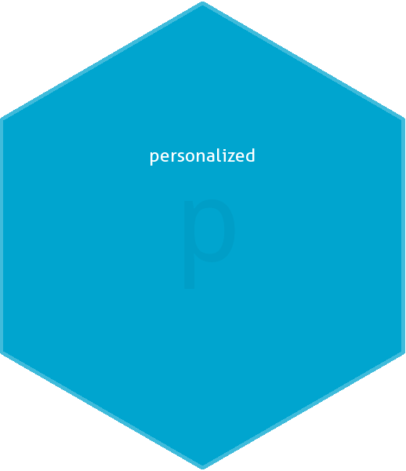

The ‘personalized’ package is designed for the analysis of data where the effect of a treatment or intervention may vary for different patients. It can be used for either data from randomized controlled trials or observational studies and is not limited specifically to the analysis of medical data.
The personalized package provides estimation methods for subgroup identification under the framework of Chen et al (2017). It also provides routines for valid estimation of the subgroup-specific treatment effects.

Documentation
Tutorial / Vignette - tutorial of statistical methodology and usage of the package
Installing the ‘personalized’ package
Install from CRAN using:
or install the development version using the devtools package:
or by cloning and building using R CMD INSTALL
Quick Usage Overview
Load the package:
Create a propensity score model
(it should be a function which inputs covariates and treatments and returns propensity score):
Display estimated subgroups and variables selected which determine the subgroups:
## family: gaussian
## loss: sq_loss_lasso
## method: weighting
## propensity
## function: propensity.func
##
## Average Outcomes:
## Recommended Ctrl Recommended Trt
## Received Ctrl -4.2429 (n = 117) -21.9576 (n = 114)
## Received Trt -23.6902 (n = 132) -6.7605 (n = 137)
##
## Ctrl effect among recommended Ctrl Trt effect among recommended Trt
## 19.4474 (n = 249) 15.1972 (n = 251)
##
## Benefit score quantiles:
## 0% 25% 50% 75% 100%
## -14.15602 -3.58120 0.04648 3.51676 14.78106
##
## 9 out of 50 variables selected in total by the lasso (cross validation criterion).
##
## Estimate
## Trt 0.3389
## V2 1.3120
## V11 -0.8576
## V17 -0.3681
## V32 0.2421
## V35 0.3570
## V39 -0.1401
## V40 0.0275
## V45 0.0945
## V50 -0.0422Display estimated subgroup treatment effects:
## family: gaussian
## loss: sq_loss_lasso
## method: weighting
##
## validation method: training_test_replication
## iterations: 100
##
## Average Test Set Outcomes:
## Recommended Ctrl Recommended Trt
## Received Ctrl -10.85 (SE = 7.88, 20.74%) -18.64 (SE = 6.5, 25.81%)
## Received Trt -15.81 (SE = 5.9, 24.18%) -15.36 (SE = 9.02, 29.26%)
##
## Ctrl effect among recommended Ctrl Trt effect among recommended Trt
## 4.97 (SE = 11.23, 44.93%) 3.27 (SE = 11.73, 55.07%)
##
## Overall Subgroup Effect
## 1.2 (SE = 8.77)Visualize subgroup-specific treatment effect estimates across training/testing iterations:

Investigate the marginal characteristics of the two estimated subgroups
Here we only display covariates with a significantly different mean value (at level 0.05)
## Avg (recom Ctrl) Avg (recom Trt) Ctrl - Trt pval Ctrl - Trt
## V2 -1.8994 1.8703 -3.7697 6.746e-55
## V11 1.2394 -1.1216 2.3610 1.325e-21
## V17 0.9566 -0.6530 1.6096 3.814e-09
## V32 -0.4991 0.1747 -0.6738 9.574e-03
## V35 -0.7170 0.4642 -1.1812 1.356e-05
## V39 0.3090 -0.3552 0.6643 1.700e-02
## V43 -0.2931 0.3787 -0.6718 1.706e-02
## SE (recom Ctrl) SE (recom Trt)
## V2 0.1469 0.1536
## V11 0.1753 0.1577
## V17 0.1989 0.1800
## V32 0.1715 0.1941
## V35 0.1825 0.1973
## V39 0.1906 0.2016
## V43 0.2091 0.1872